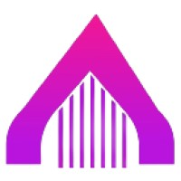
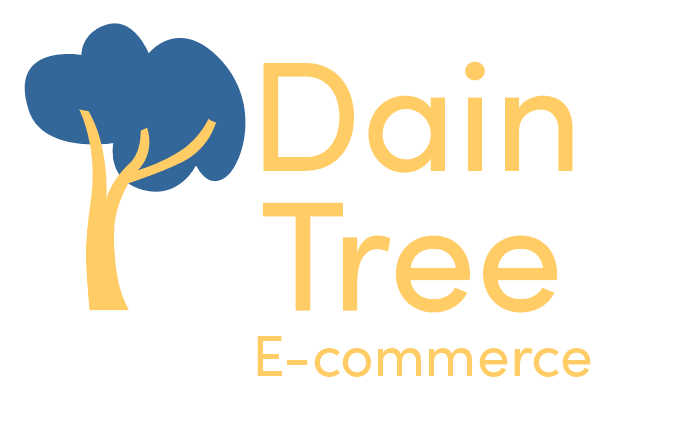

-
Bridxe Frontend Internship
I have had the privilege of working with Bridxe as a front end intern. Using react and chartjs I have been fetching from a server to create data visualization components. This is a remote job with very flexible hours I have been able to learn while I work as well. So far this is my favorite job: making projects, having quick yet productive meetings and getting to do tutorials to learn more all on my time.
-
My Website
This has been an ongoing project with several iterations and philosophy changes. I want a project that shows off good UI design and responsiveness. This forces a bit of pressure to be professional and flawless. When this project was started there was so little understanding of what would represent me and how to make things look good.
-
Precision Infinity

I had the opportunity to shadow this company learning more about ORM database technology and C# web development. Precision makes admin boards for diverse companies. This means they work closely with database technologies and web development. They focus on UX as their customers can be anything from lunch ladys to farm owners. I got the opportunity to see some real world development and talk one on one.
-
Daintree Ecommerce
Website I made with PHP and Mysql to practice database fundamentals and web development. I made other projects with PHP and databases durring this time as well. I learned about the Model view controller design pattern and web servers. This type of project helped lead me toward web application development.
-
Universal Truth

Space is vast and full of resources and in this 2D Unity game the player has to buy everything they can. The game is made in C# with Unity and I used 2D lighting for the first time. I made it for the Florida Polytechnic game expo and got 8th/20. Not terrible as I was on my own and a sophmore, but the game has a lot of issues.
-
Florida National News internship

Wordpress powers so much of the web, but at the time I had this internship, I was unaware of how useful it is. I found tips and tricks from Google and my friend Jason who had some real good experience in Wordpress and PHP guided me a ton. Florida National News is a nonprofit news publication. Most of what they do is on the website from SSL configuration to simple UI changes; all of it needs to be updated as soon as possible. I still use Wordpress for freelance work and got my start here.
-
Florida Polytechnic University

I currently attend Florida Polytechnic University. I am earning a Bachelors in Computer Science. There are several ways I have made Poly a part of my life, I am the president of the Media Club, I work in the Simulation and MultiMedia Lab, and I write for Layers, a student newspaper.
-
High School Programming Club
I had no real programming knowledge at the time but I had always wanted to know more about how computers worked. It didn't hurt that I also wanted to make games. At first my goal was programming as a hobby and to find some other career but I became obsessed and here we are today.